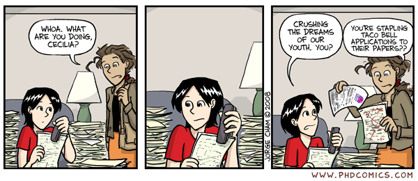
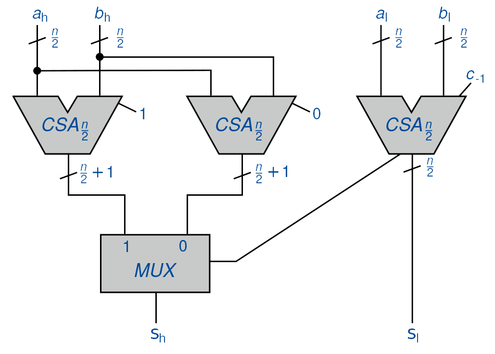
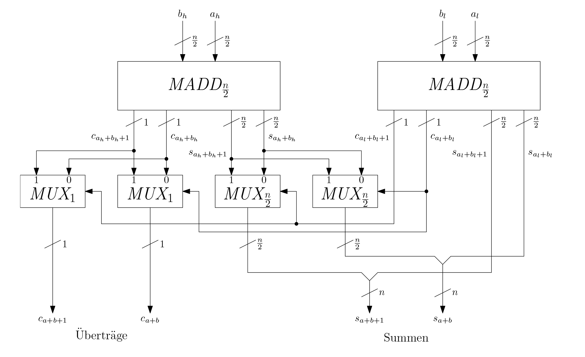
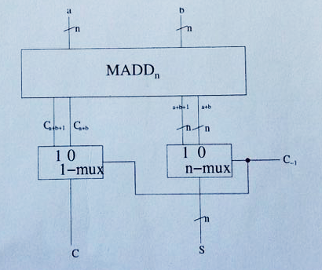
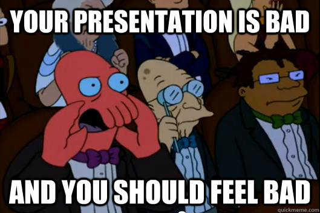
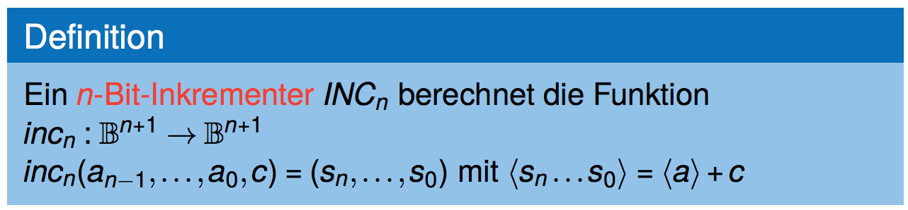
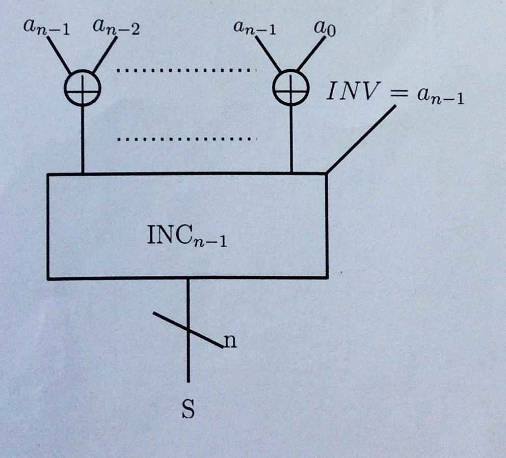
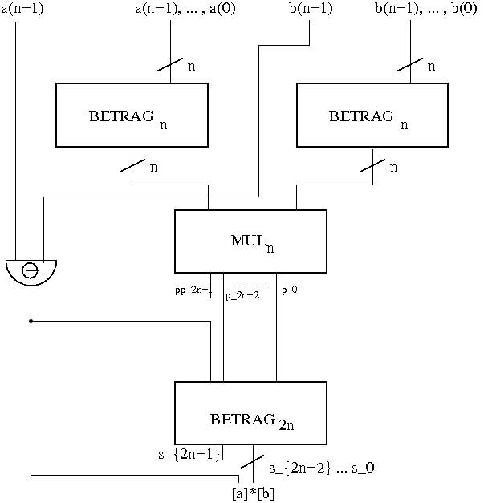

<!doctype html>
<html lang="en">
    <head>
        <meta charset="utf-8">
        <title>reveal-md</title>
        <link rel="stylesheet" href="css/reveal.css">
        <link rel="stylesheet" href="css/theme/black.css" id="theme">
        <!-- For syntax highlighting -->
        <link rel="stylesheet" href="lib/css/zenburn.css">

        <!-- If the query includes 'print-pdf', use the PDF print sheet -->
        <script>
          document.write( '<link rel="stylesheet" href="css/print/' + ( window.location.search.match( /print-pdf/gi ) ? 'pdf' : 'paper' ) + '.css" type="text/css" media="print">' );
        </script>
    </head>
    <body>

        <div class="reveal">
            <div class="slides"><section  data-markdown><script type="text/template"># Übungsblatt 6

<small>by Simon Selg, Danny Stoll</small>
</script></section><section  data-markdown><script type="text/template">
## Gliederung

- [Organisatorisches](/exc06.md#/2)
- [Allgemeines](/exc06.md#/3)
- Aufgaben
	- [Aufgabe 1](/exc06.md#/4)
	- [Aufgabe 2](/exc06.md#/5)
	- [Aufgabe 3](/exc06.md#/6)
- [Blatt 7](/exc06.md#/7)

</script></section><section ><section data-markdown><script type="text/template">
## Organisatorisches
</script></section><section data-markdown><script type="text/template">
### Anwesenheit


</script></section><section data-markdown><script type="text/template">
### Vorrechnen


</script></section><section data-markdown><script type="text/template">
### Testat

- 12.01.2017
- <font color="#00ff00">Nach</font> TI-Vorlesung
- Zählt wie 2 Übungsblätter (40 Pkt.)
</script></section><section data-markdown><script type="text/template">
### Feedback Vorlesung

- Dozent
- Übungsblätter
- etc.
</script></section><section data-markdown><script type="text/template">
### Feedback Tutorat

- Folien
- Stil
- Korrektur
- Email Spam
</script></section></section><section ><section data-markdown><script type="text/template">
## Allgemeines
</script></section><section data-markdown><script type="text/template">
### Blatt 6 Statistiken

- $\varnothing_{Punkte} \approx 7.7$
- $\sigma_{Punkte} \approx 3.6$


</script></section><section data-markdown><script type="text/template">
### Studienleistung: Zwischenstand

- <font color="#00ff00">Anwesenheit</font>
- <font color="#ff7500">Punkte</font>
	- $\varnothing \approx 51.9 \\% $
	- $\sigma \approx 10.5 \\% $
- <font color="#ff0000">Vorrechnen</font>
	- 7/18 Aktiven Kursteilnehmern*innen
</script></section><section data-markdown><script type="text/template">
### Klausur Relevanz
</script></section><section data-markdown><script type="text/template">
### Erste Aufgabe

- [Aufgabe 1](/exc06.md#/4)
- [Aufgabe 2](/exc06.md#/5)
- [Aufgabe 3](/exc06.md#/6)
- [Blatt 7](/exc06.md#/7)
</script></section></section><section ><section data-markdown><script type="text/template">
## Aufgabe 1
</script></section><section data-markdown><script type="text/template">
### Wiederholung: $CSA_n$


</script></section><section data-markdown><script type="text/template">
### $MADD_n$



</script></section><section data-markdown><script type="text/template">
### a) Funktionsweise

$$
\begin{align}
& \text{Rechts:} &a_L + b_L, \\ \\ && a_L + b_L + 1\\\\
& \text{Links:} &a_H + b_H, \\ \\ && a_H + b_H + 1\\\\
& \text{Insgesamt:} &a + b, \\ \\ && a + b + 1\\\\
\end{align}
$$
</script></section><section data-markdown><script type="text/template">
### b) $MADD_1$
</script></section><section data-markdown><script type="text/template">
#### c) Kostenanalysis - Vermutung Herleitung

<div style="height: 50px;"></div>
<div style="font-size: 80%;">
$$
\begin{align}
C(MADD\_n) &= 2 \cdot C\left(MADD\_{n/\_2}\right) + 2 \cdot C\left(MUX\_{n/\_2}\right) + 2 \cdot C(MUX\_1) \\\\
&= 2 \cdot C\left(MADD\_{{n/\_2}}\right) + 3n + 10 \\\\
&= 2 \cdot \left[ 2 \cdot C\left(MADD\_{n/\_4}\right) + \frac{3n}{2} + 10 \right] + 3n + 10 \\\\
&\\ \\ \vdots
\end{align}
$$
</script></section><section data-markdown><script type="text/template">
#### c) Kostenanalysis - Vermutung Herleitung

<div style="height: 50px;"></div>
<div style="font-size: 80%;">
$$
\begin{align}
&= 2 \cdot \left[ 2 \cdot C\left(MADD\_{{\frac{n}{4}}}\right) + \frac{3n}{2} + 10 \right] + 3n + 10 \\\\
&\\ \\ \vdots \\\\
&= 2^k \cdot C(MADD\_1) + \left[\sum\_{j=1}^k 2^{j-1} \left(  3 \cdot \frac{n}{2^{j-1}}  + 10 \right)\right] \\\\
&= n \cdot \left(3 \log n + 14\right) - 10
\end{align}
$$
</script></section><section data-markdown><script type="text/template">
### c) Kostenanalysis - Vermutung

$$
C\left(MADD\_n\right)  \stackrel{!}{=} n \cdot \left(3 \log n + 14\right) - 10 \quad \in \mathcal{O}\left(n \cdot \log n\right)
$$

</script></section><section data-markdown><script type="text/template">
### c) Kostenanalysis - Beweis

- Per Induktion
</script></section><section data-markdown><script type="text/template">
### d) $MADD\_n \text{ mit Eingangscarry}$


</script></section><section data-markdown><script type="text/template">
### d) $MADD\_n \text{ mit Eingangscarry}$


</script></section><section data-markdown><script type="text/template">
### [OT] Fotographie


</script></section><section data-markdown><script type="text/template">
### Häufige Fehler
</script></section><section data-markdown><script type="text/template">
### Nächste Aufabe

- [Aufgabe 2](/exc06.md#/5)
- [Aufgabe 3](/exc06.md#/6)
- [Blatt 7](/exc06.md#/7)

</script></section></section><section ><section data-markdown><script type="text/template">
## Aufgabe 2


</script></section><section data-markdown><script type="text/template">
### a) $abs\_n : \mathbb{B}^n  \rightarrow \mathbb{B}^n$

$(a\_{n-1}, \ldots, a\_0) \mapsto (s\_{n-1},\ldots, s\_0), \quad$ mit $\langle s \rangle = |[a]|$
</script></section><section data-markdown><script type="text/template">
### a) Betragsdefinition

$$
|r| =
\begin{cases}
  r, & \text{falls } r \geq 0 \\\\
  -r, & \text{falls } r < 0
\end{cases}
$$
</script></section><section data-markdown><script type="text/template">
### a) Inkrementer


</script></section><section data-markdown><script type="text/template">
### a) Idee

<div align="Left">Falls $a\_{n-1} = 1$:</div>
- invertiere $(a\_{n-2}, \ldots, a\_{0})$
- inkrementiere Ergebnis
</script></section><section data-markdown><script type="text/template">
### a) Implementierung


</script></section><section data-markdown><script type="text/template">
### a) Kosten

\begin{align}
	C(SK) &= C({INC}\_{n-1}) + (n - 1) \cdot C(XOR) \\\\
  &= (n - 1) \cdot C(HA) + (n - 1)\\\\
  &= 3n - 3
\end{align}
</script></section><section data-markdown><script type="text/template">

#### b) $twocmul\_n: \mathbb{B}^n \times \mathbb{B}^n \rightarrow \mathbb{B}^{2n}$

$$
\begin{align}
\\ & \\ && \\\\
twocmul\_n(a\_{n-1}, \ldots, a\_0, b\_{n-1}, \ldots, b\_0) &:= (p\_{n-1}, \ldots, p\_0) \\\\
\left[p\_{n-1}, \ldots, p\_0\right]\_2 &:= \left[a\right]\_2 \cdot \left[b\right]\_2 \\\\
\end{align}
$$
</script></section><section data-markdown><script type="text/template">
### b) Idee

1. Multipliziere Beträge
1. Korrigiere Vorzeichen
</script></section><section data-markdown><script type="text/template">
### b) Implementierung


</script></section><section data-markdown><script type="text/template">
### Häufige Fehler

$$ \text{Abgabe } \equiv \emptyset $$
</script></section><section data-markdown><script type="text/template">
### Nächste Aufabe

- [Aufgabe 1](/exc06.md#/4)
- [Aufgabe 3](/exc06.md#/6)
- [Blatt 7](/exc06.md#/7)
</script></section></section><section ><section data-markdown><script type="text/template">
## Aufgabe 3


</script></section><section data-markdown><script type="text/template">
### Stabilitäts Analysis
</script></section><section data-markdown><script type="text/template">
### Aufgabe 3 - Stabile Belegungen

- $a = 0, \\ b = 0, \quad c = 0, \\ d = 1$
- $a = 0, \\ b = 0, \quad c = 1, \\ d = 0$
- $a = 0, \\ b = 1, \quad c = 1, \\ d = 0$
- $a = 1, \\ b = 0, \quad c = 0, \\ d = 1$
- $a = 1, \\ b = 1, \quad c = 0, \\ d = 0$
</script></section><section data-markdown><script type="text/template">
### Nächste Aufabe

- [Aufgabe 1](/exc06.md#/4)
- [Aufgabe 2](/exc06.md#/5)
- [Blatt 7](/exc06.md#/7)

</script></section></section><section ><section data-markdown><script type="text/template">
## Blatt 7
</script></section><section data-markdown><script type="text/template">
### Hinweise
</script></section><section data-markdown><script type="text/template">
### Klausur Relevanz
</script></section></section><section  data-markdown><script type="text/template">
## Sonstiges


</script></section><section  data-markdown><script type="text/template">
## Quellen

- [Undergrad skipping class](http://images.google.de/imgres?imgurl=https%3A%2F%2Fqph.ec.quoracdn.net%2Fmain-qimg-204c8d70b3bd079ecbe35b2cefccd0c7-c%3Fconvert_to_webp%3Dtrue&imgrefurl=https%3A%2F%2Fwww.quora.com%2FWhat-are-some-of-the-most-funny-lazy-college-senior-memes&h=265&w=400&tbnid=iNqtDTjYM-ov5M%3A&vet=1&docid=_p31Cvbghhd6YM&ei=RsdIWMHMNYOtaam5t4AJ&tbm=isch&client=ubuntu&iact=rc&uact=3&dur=425&page=0&start=0&ndsp=35&ved=0ahUKEwjBh-WVyOPQAhWDVhoKHancDZAQMwglKAkwCQ&bih=810&biw=1600)
- [PhD Comics](http://www.phdcomics.com/)
- [Boromir facepalm](https://imgflip.com/s/meme/Frustrated-Boromir.jpg)
- [Bad Presentation](http://s2.quickmeme.com/img/50/509b9ce3a12dfca9e484d57bec0988d9529958eba1b67e2254d2c4d8db108e4c.jpg)
- [Obama not bad](http://i0.kym-cdn.com/photos/images/facebook/000/138/246/tumblr_lltzgnHi5F1qzib3wo1_400.jpg)
- [Presentation funny](http://s2.quickmeme.com/img/8e/8e5b3027d2dabf29587c6749455a75e580d395239739dae8dc5edca08685f62d.jpg)
</script></section></div>
        </div>

        <script src="lib/js/head.min.js"></script>
        <script src="js/reveal.js"></script>

        <script>
            function extend() {
              var target = {};
              for (var i = 0; i < arguments.length; i++) {
                var source = arguments[i];
                for (var key in source) {
                  if (source.hasOwnProperty(key)) {
                    target[key] = source[key];
                  }
                }
              }
              return target;
            }

            // Optional libraries used to extend on reveal.js
            var deps = [
              { src: 'lib/js/classList.js', condition: function() { return !document.body.classList; } },
              { src: 'plugin/markdown/marked.js', condition: function() { return !!document.querySelector('[data-markdown]'); } },
              { src: 'plugin/markdown/markdown.js', condition: function() { return !!document.querySelector('[data-markdown]'); } },
              { src: 'plugin/highlight/highlight.js', async: true, callback: function() { hljs.initHighlightingOnLoad(); } },
              { src: 'plugin/notes/notes.js', async: true, condition: function() { return !!document.body.classList; } },
              { src: 'plugin/math/math.js', async: true },
              { src: 'plugin/math/math.js', async: true }
            ];

            // default options to init reveal.js
            var defaultOptions = {
              controls: true,
              progress: true,
              history: true,
              center: true,
              transition: 'default',
              dependencies: deps,
              math: {
                mathjax: 'https://cdn.mathjax.org/mathjax/latest/MathJax.js',
                config: 'TeX-AMS_HTML-full'
              }
            };

            // options from URL query string
            var queryOptions = Reveal.getQueryHash() || {};

            var options = {};
            options = extend(defaultOptions, options, queryOptions);
            Reveal.initialize(options);
        </script>

          <script src="/scripts/presentations"></script>
    </body>
</html>

